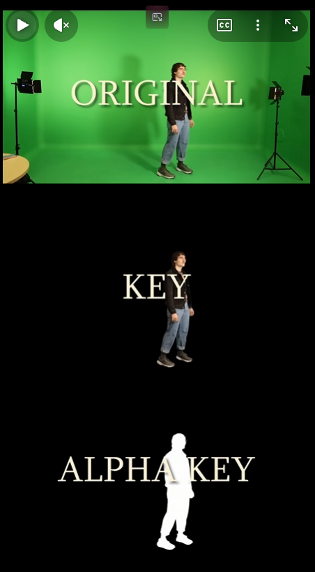
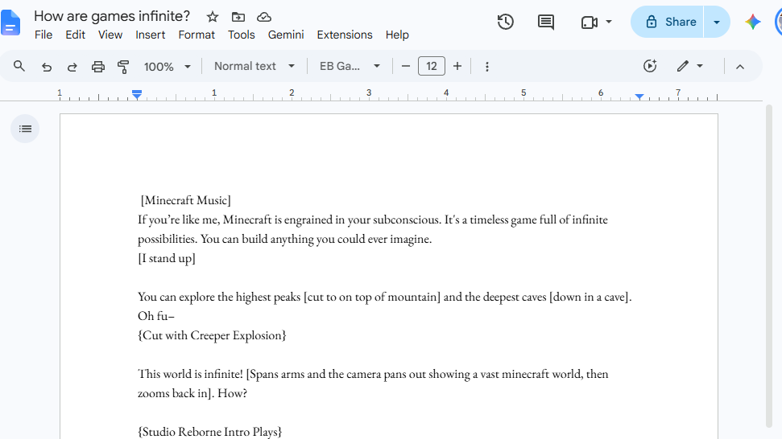
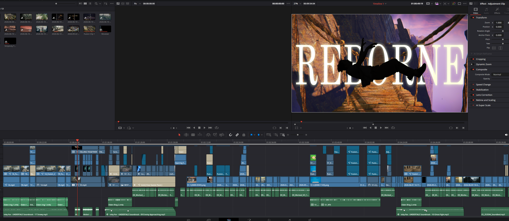
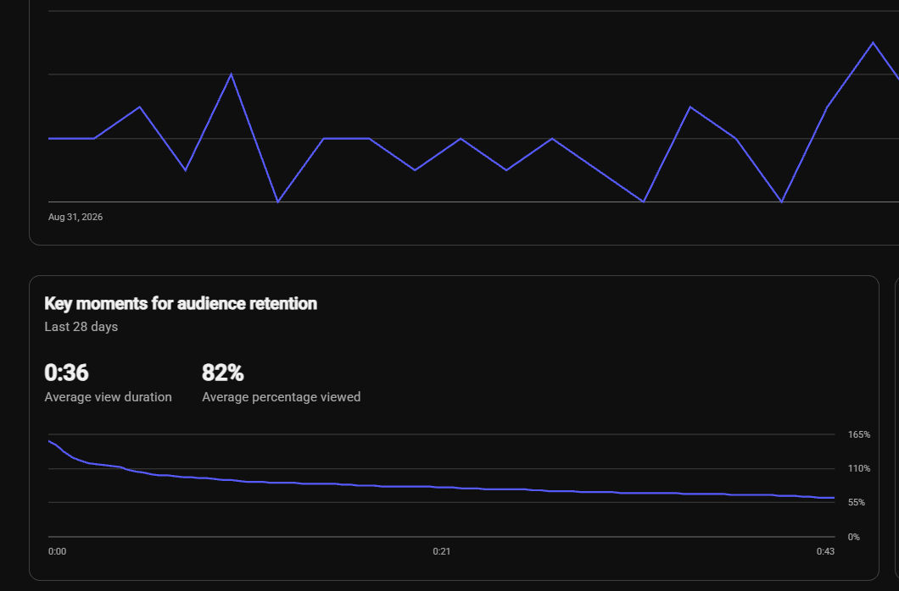
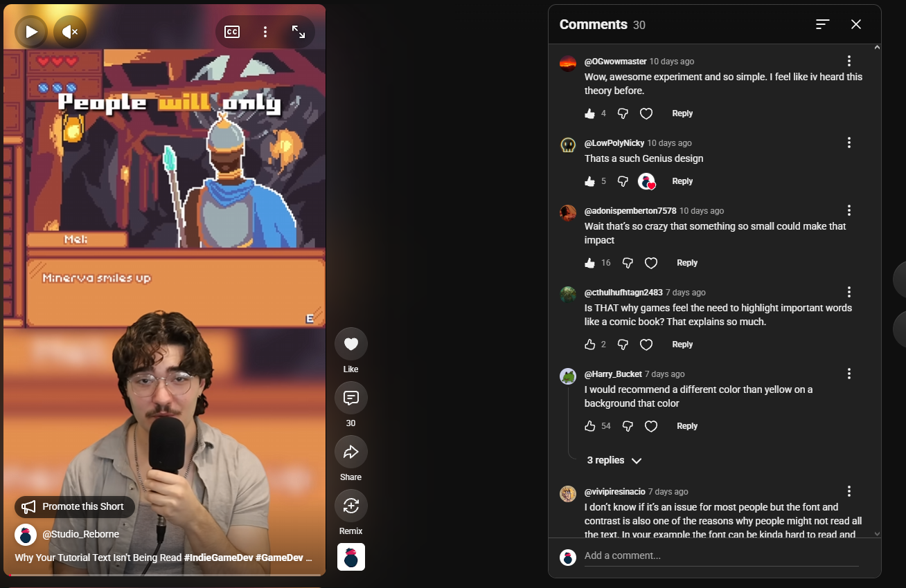
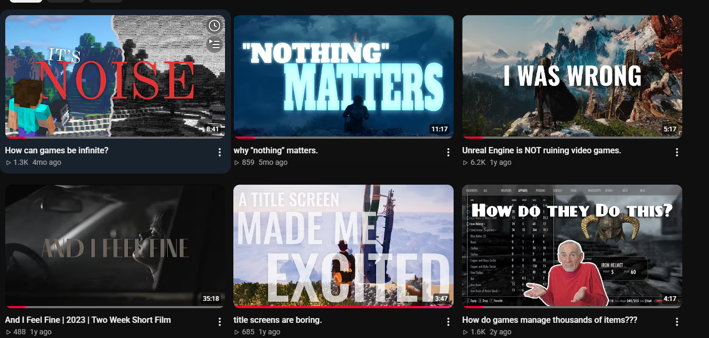
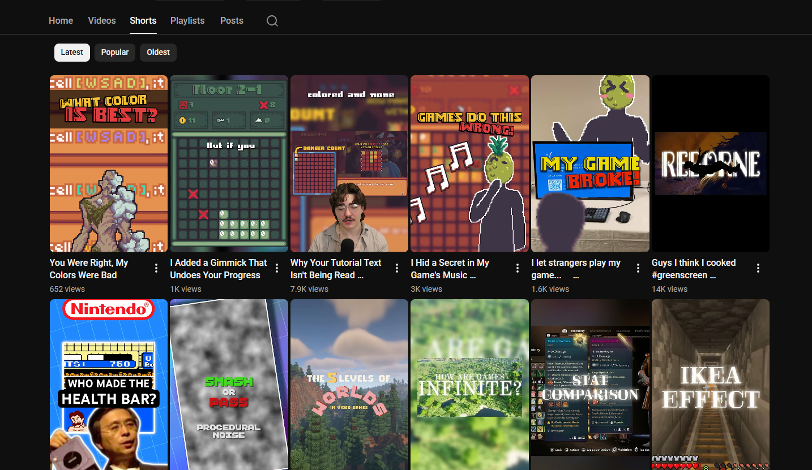

STUDIO REBORNE
Wrote and produced educational game design videos covering design philosophy, systems design, and development techniques — 1.6M total channel views and 7k subscribers.
>> VISIT CHANNEL (opens in new tab)
// FEATURED_VIDEO
// SHORTS
// KEY_RESPONSIBILITIES
Wrote every script from long-form to short form, researching design topics to cover. Concepted original design theses, presented philosophical conclusions, and gave advice to the YouTube design community.
Shot, edited, and color graded every video using DaVinci Resolve. Responsible for all motion graphics, composed a significant portion of the music, and filmed most gameplay footage in a cinematic manner.
Grew the channel from zero to 7k+ subscribers and 1.6M views through unique, creative content that fills a niche in the design community.
// DESIGN_PROCESS
CHOOSING A TOPIC
Every video starts with a design question. For 'How are games infinite?', the question was how do games navigate designing randomness? I knew it was worth a full video when I began the script and let my imagination run wild on the greenscreen ideas.

WRITING THE ARGUMENT
I write a script the way I write a GDD: constant iteration. Usually a script starts with a single line, then I build around it -- just like a GDD starts with an idea. The hardest part, just like making a game, is reeling in the scope. The question is always "How can I make engaging content without spending hundreds of hours in the eding bay?"

DESIGNING FOR RETENTION
A video is a game with one mechanic: keep watching. And that in itself helps me narrow my scope. Its always the most important to ask the question: 'What would the viewer want?' instead of 'What do I want?'. This methodology helps drive scope-creep away and tightens the project up.


WHAT TEACHING DESIGN TAUGHT ME
Teaching design has taught me more about design than making any one game has. By explaining the reasoning behind every decision, I've become a far more analytical person. I can explain the decisions I've made, and work my way through future design decisions because I've become conscious of every choice I make and how that affects the player.

// SCREENSHOT_LOG


